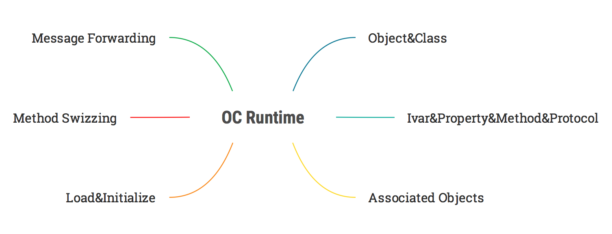

Objective-C Runtime

Objective-C是面向运行时的编程语言，这就意味着运行阶段才知道如何执行，而不是编译链接阶段就确定好。
What is the Objective-C Runtime?
The Objective-C Runtime is a Runtime Library, it's a library written
mainly in C & Assembler that adds the Object Oriented capabilities
to C to create Objective-C. This means it loads in Class information,
does all method dispatching, method forwarding, etc. The Objective-C
runtime essentially creates all the support structures that make
Object Oriented Programming with Objective-C Possible.
- 有了Objective-C Runtime，就有了各种在运行时修改代码的hack手段。
类
- 先看下
类的结构体定义，除了存放类的基本信息，还存放对象的变量、方法、协议的元信息。程序加载时，类结构体会被实例化，并放到全局列表中g_classList，结构体的isa、super_class、methodLists等属性也一起被初始化。
// 伪代码，对源码稍做修改。
static Class *g_classList;
struct objc_class {
Class isa; // 指向元类
Class super_class; // 指向父类
// 类基本信息
const char *name;
long version;
long info;
long instance_size;
// 类的变量、方法、协议的元信息
struct objc_ivar_list *ivars;
struct objc_method_list **methodLists;
struct objc_protocol_list *protocols;
// 方法缓存
struct objc_cache *cache;
};
typedef struct objc_class *Class;
bool isMetaClass() {
return info & CLS_META;
}
元类
元类跟类使用相同的结构体，只是通过isMetaClass方法做区分。元类结构体中，存放类的变量、方法、协议的元信息。对象、类、元类的关系如下：

对象
- 对象的结构体如下，存放对象的变量数据，其他的都是先通过
isa找到类，再从类中找出变量、方法等的元信息。
// 伪代码，对源码稍做修改。
struct objc_object {
Class isa;
// 变量的数据
void *varsLayout;
}
typedef struct objc_object *id
- 创建对象，
NSObject *obj = [[NSObject alloc] init];可能对应以下一些动作。
// 伪代码
{
// 找到类
Class cls = findClass("NSObject");
// 找到alloc方法，执行生成对象
IMP imp = findImp(cls, "alloc");
id obj = imp(cls);
// 找到init方法，执行初始化对象
IMP imp = findImp(cls, "init");
imp(obj);
// 返回对象
return obj;
}
id alloc(Class cls) {
id obj = malloc(sizeof(struct objc_object));
obj->isa = cls;
return obj;
}
id init(id obj) {
obj->varsLayout = xxx;
}
总结
- 总的来说，全局维护一张类表，存放类方法、实例方法、实例变量的元信息等。程序加载阶段会初始化这张表。运行阶段，也可以通过
addMethod、class_replaceMethod、class_addIvar、class_addProtocol、class_addProperty等接口动态修改这张表。
### 参考 - ObjCRuntimeGuide
- runtime源码
- Objective-C 的动态提示和技巧
- NSObject的load和initialize方法
- associated-objects